Sorphera: budget, globe and NFT evidence
Website iteration from merged PR #5. Demo — no real tickets or prizes. Read the validation and limitations or open the exported interactive demo when this repository is served over HTTP.
IMD CLI publication was attempted but refused with 503 member_sites_closed. These are local export checks; the existing public site was not updated. Publication result.
Continuous normal-speed reveal
Silent 22.92-second Chromium recording, 960×760, 25 fps. Normal speed, without pauses or timer overrides. The control bar remains available throughout. This records browser motion; it does not certify physical-phone performance.
Text description of the clip
The labelled NFT demo waits for its fixture result. Each ice-blue globe enters showing its back, turns with its continents and cream patch on the same curved surface, then stops. Only then does the patch read 07, 12, and 19 in turn. Each globe holds, then travels down into its draw slot without changing material, geography or orientation. The pink bonus globe gets its own turn and stop, showing 04, then lands. Matching-ticket results follow the bonus; the separate NFT tie-break confirms sample ticket 118. No real NFTs have been pulled, secured or won.
Reveal stages
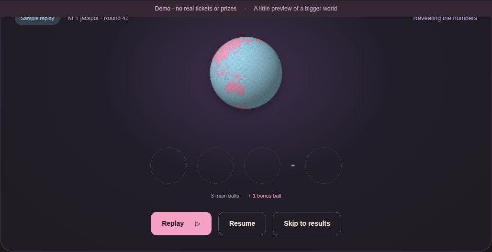
Facing away. Number hidden.
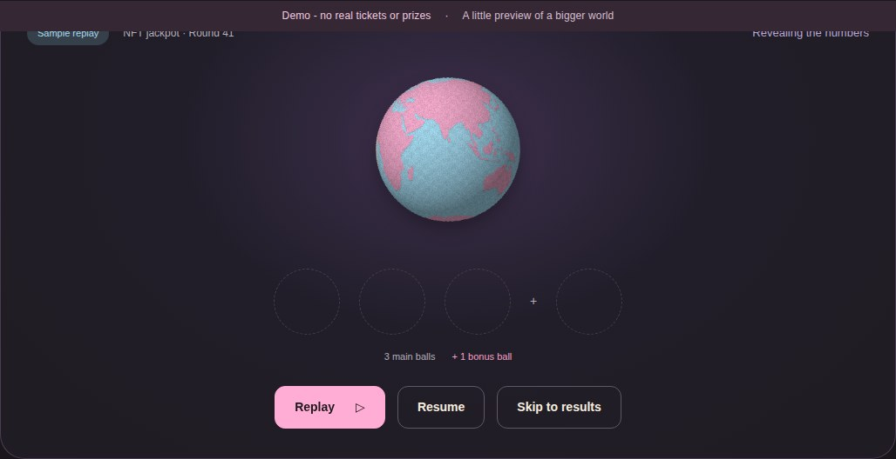
Mid-turn. This frame was paused for inspection.
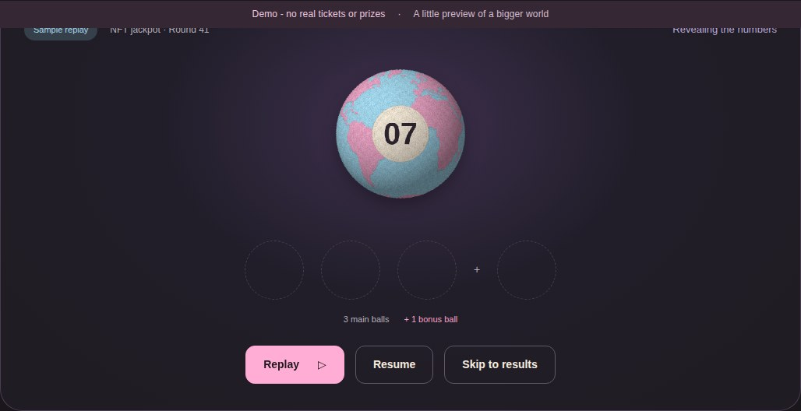
Stopped, holding and announcing 7.
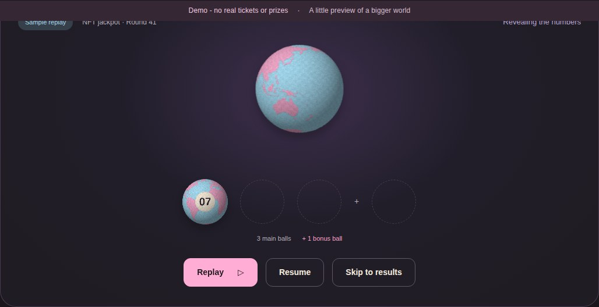
Landed. Its canvas pixels match the stopped globe before scale.
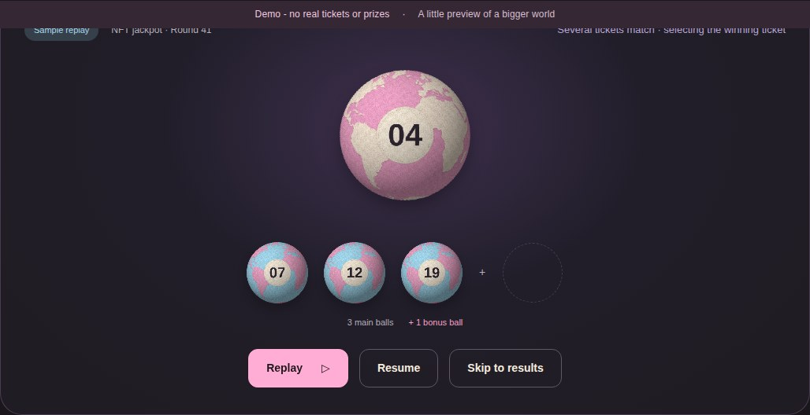
Bonus stop, before the separate NFT winner is known.
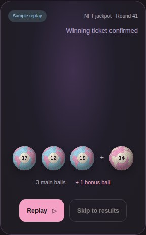
Same design in narrow reduced-motion results.
Budget guard: before and after
The acceptance fixture uses US$2,500 per ETH, a 0.005 ETH / US$12.50 ticket, and 0.0004 ETH / US$1.00 per-checkout fee. Two tickets total US$26.00; three total US$38.50.
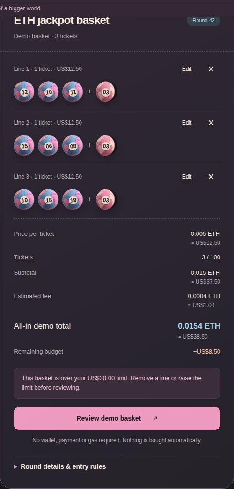
PR #5 baseline: warning without enforcement.
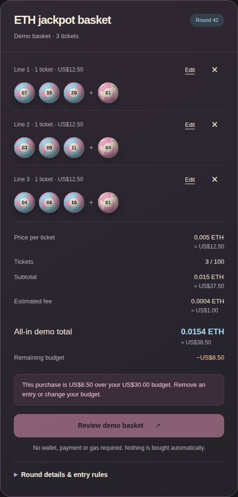
Current export: exact excess and recovery advice; Review is blocked.
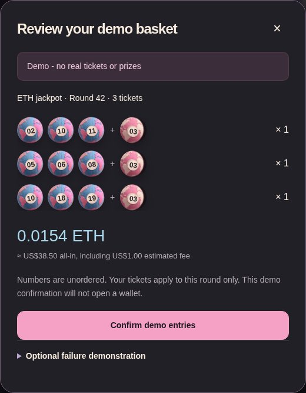
Baseline confirmation allowed the over-budget demo purchase.
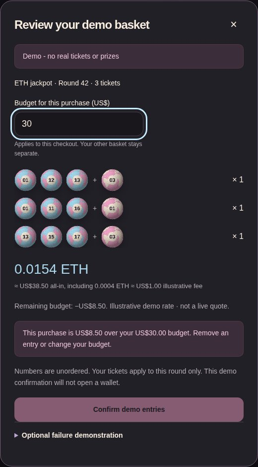
Current confirmation rechecks the edited budget.
Homepage: before and after
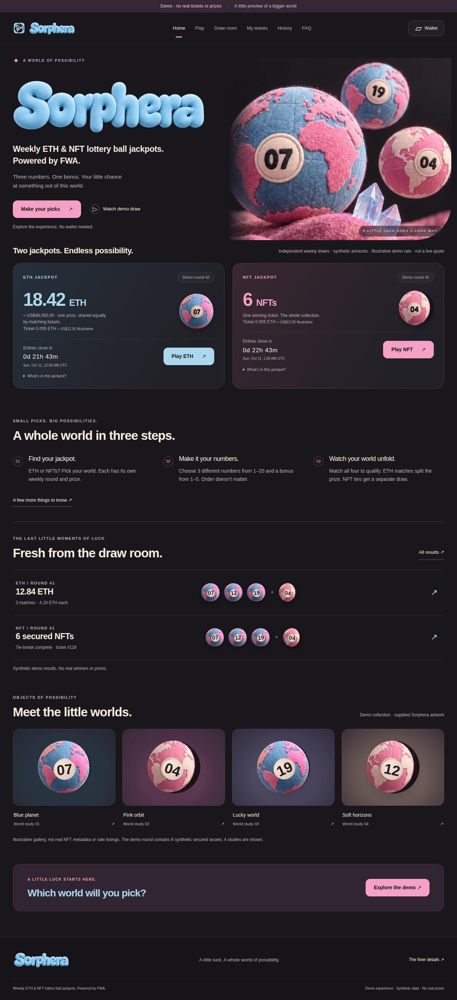
Before: fictional collection gallery.
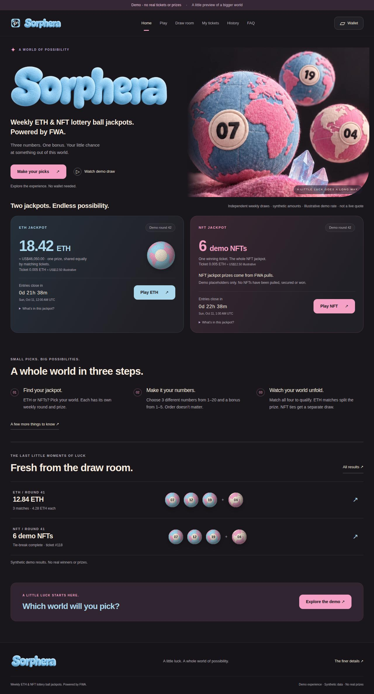
After: accurate FWA explanation and no invented collection.
Other checked states